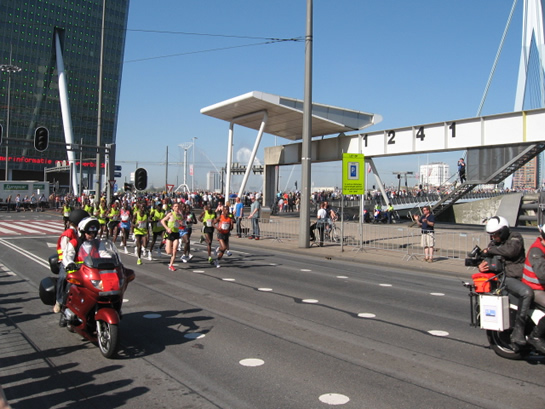

Warme Marathon in Rotterdam en meer nieuws...
- maandag 01 december 2008 15:55
- Geschreven door Simon
Vandaag vond in Rotterdam de 27ste editie van de Fortis Marathon plaats. Het jaarlijks terugkerende sportevenement werd deze keer in verband met het warme weer voortijdig beëindigd. De organisatie vond het onverantwoord om onder deze omstandigheden alle deelnemers de 42.195 meter lange route af te laten leggen. Er werd besloten een groot deels van het parcours "af te knippen" en flink wat deelnemers direct richting de Coolsingel te laten lopen richting finish, in plaats van in oostelijke richting voor een lus om de Kralingse Plas. Meerdere deelnemers, maar ook toeschouwers, moesten zich door medisch personeel laten behandelen.
Veel tram- en buslijnen reden niet of anders, de metro had de taak om de meeste toeschouwers te vervoeren. De meeste druk kwam te liggen op de Erasmuslijn, hier reden tenminste drie extra wagendiensten, de nummers 997, 998 en 999. Alle wagendiensten op de Erasmuslijn waren vier rijtuigen lang en bestonden uit alleen maar rijtuigen uit de 5300-serie. Op de Calandlijn reden voornamelijk driewagentreinen en enkele tweewagentreinen. Om de drukte beter aan te kunnen werden er twee extra wagendiensten ingezet, wagendiensten 598 en 599. Deze bestonden uit twee maal driewagentreinen, allebei bestaande uit 5400-rijtuigen.
Op diverse stations stonden extra verkoop- en informatiepunten, zodat toeschouwers makkelijk aan geldige vervoersbewijzen konden komen. Deze stonden onder andere op drukke stations zoals Alexander en Centraal Station. Bij de laatste was er een stand in de stationshal van het NS-station zelf opgezet.
De meeste metro's op de Erasmuslijn reden tussen Centraal Station en Slinge, met name tijdens de extra drukke momenten. Hierbij werd zowel gekeerd op de Slinge keersporen als op remise Waalhaven, op sporen 146 en 147. Hierbij reden uiteraard géén passagiers mee, de metrorijtuigen filmden "niet instappen".
Omstreeks 10.45 uur was er een wisselstoring in wisselcomplex Centraal Station op de Erasmuslijn, waardoor er tijdelijk maar één spoor van het gelijknamige kopstation kon worden gebruikt, te weten spoor 1. Medewerkers van de afdeling Infra waren snel ter plaatse om de storing te herstellen, maar enkele minuten vertraging kon niet worden voorkomen.
De beheerders van retmetro.nl feliciteren de deelnemers met hun behaalde prestaties, ondanks dat het evenement voortijdig is afgebroken.

De kopploeg is zojuist de Nieuwe Maas overgestoken via de Erasmusbrug en is onderweg in zuidelijke richting.
In grote aantallen aanwezig op de Erasmuslijn: vierwagentreinen uit de 5300-serie.
Er werd gekeerd op de Slinge opstelsporen ten zuiden van het station...
Maar ook op de sporen van remise Waalhaven. Dat leverde soms interessante eindbestemmingen op op de displays van station Slinge.
Drukte op station Wilhelminaplein, metro's reden af en aan.
Na afloop van de Marathon was het ook druk op Beurs-Calandlijn; men werd verzocht zich goed over het perron te verspreiden.
Extra opvallende bewegwijzering siert de roltrappenbehuizingen van station Beurs-Erasmuslijn.
Extra wagendienst 599 wacht om te worden ingezet op Blaak spoor 3, de 598 stond ook nog enige tijd op Marconiplein spoor 3.
Ook op de RandstadRail Erasmuslijn was het drukker dan op een normale zondag.
Tante Jo in Marathon-outfit, ter promotie van de OV-chipkaart.
AHOB-storing kruising Zevenkampse Ring
Vanmiddag werd de AHOB-installatie van kruising Zevenkampse Ring in de wijk Zevenkamp getroffen door een storing. Enkele bomen kwamen niet meer omhoog. Met mankracht zijn deze bomen omhoog getrokken, zodat het verkeer weer kon passeren. De precieze oorzaak en duur van de storing zijn onbekend.
Enkele slagbomen van kruising Zevenkampse Ring weigeren dienst en worden met handkracht rechtop getrokken.